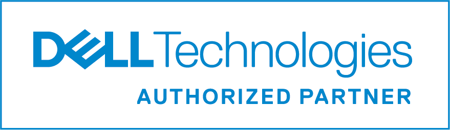
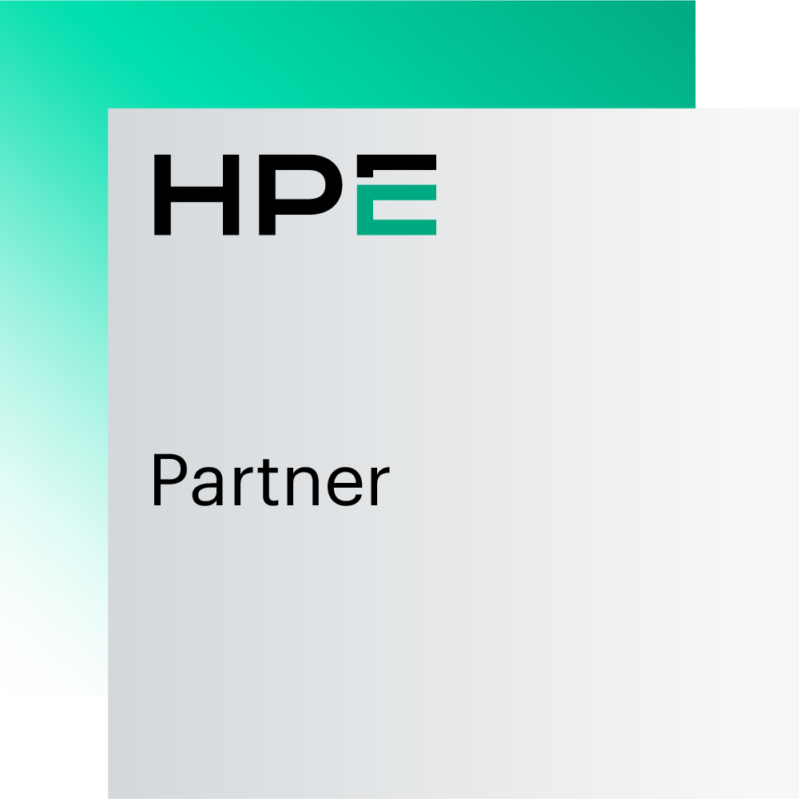
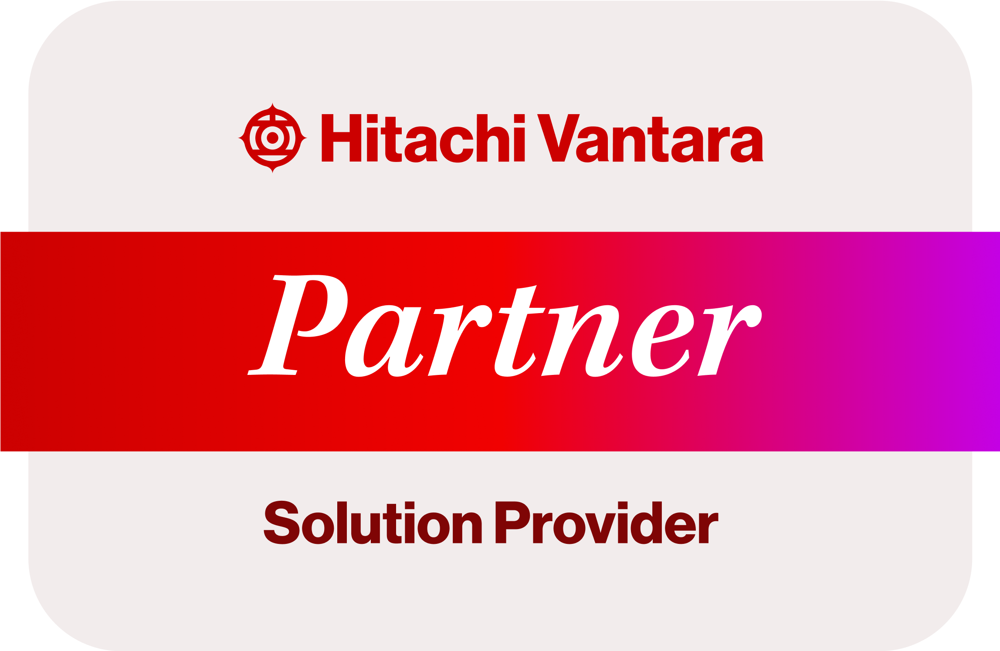

CoreCloud orchestrates capability instead of pretending to own every capability internally.
Enterprise execution requires depth across software engineering, infrastructure, storage, cloud, data, AI, lifecycle finance and specialist talent. The CoreCloud model assembles the right capability mix around the workload, decision point and business outcome.
Partners are not a logo wall. They are execution capacity inside a governed capability ecosystem. CoreCloud's role is to align the outcome, define the venue and coordinate the capability required to deliver.
Strategic ecosystem. Orchestrated outcomes.
CoreCloud aligns technology and delivery capability around client outcomes, not vendor agendas.
Real capability, not logo theatre.
CoreCloud's partner ecosystem gives clients access to proven infrastructure, software engineering, data, storage, technology lifecycle and execution capability.

DVT
Enterprise EngineeringEnterprise applications, digital platforms, modern engineering and product delivery capacity.

Scality
Sovereign Data CapabilityCyber-resilient object storage, sovereign data architectures, scale, durability and ransomware-resilient storage.

Dell Technologies
Enterprise ComputeEnterprise compute, infrastructure modernisation and workload-aligned technology foundations.

Hewlett Packard Enterprise
Hybrid InfrastructureHybrid platforms, infrastructure foundations and enterprise technology capability for modern workloads.

Hitachi Vantara
Enterprise Data InfrastructureEnterprise-grade infrastructure capability for resilient, data-intensive and mission-critical environments.
CoreCloud Talent
Execution CapabilitySpecialist people capability to execute across cloud, data, AI, security, architecture and applications.
LSD Open
Enterprise Technology & Digital TransformationLSD Open helps organisations modernise operations through enterprise technology, digital transformation and business innovation initiatives that improve agility, efficiency and long-term competitiveness.
RentWorks
Technology Lifecycle & Asset FinanceRentWorks enables organisations to acquire, manage and refresh technology investments through flexible financing and lifecycle solutions that support sustainable technology adoption.
ReWorks
Refurbished Enterprise Technology & Circular EconomyReWorks supports sustainable technology consumption through refurbished enterprise hardware, circular economy programmes and responsible technology recovery initiatives.
Technology economics, sovereignty and lifecycle capability.
The expanded partner model reinforces CoreCloud's advisory position across open technology, asset lifecycle financing and circular technology consumption.
Enterprise Technology & Digital Transformation
LSD Open delivers enterprise technology and digital transformation capabilities that help organisations modernise legacy environments, improve operational performance and unlock new business opportunities.
Technology Lifecycle & Asset Finance
RentWorks provides technology financing and lifecycle solutions that help organisations acquire, manage and refresh technology investments while preserving capital and improving financial flexibility.
Refurbished Enterprise Technology & Circular Economy
ReWorks helps organisations extend the value of technology assets through responsible refurbishment, recovery and reuse programmes aligned to circular economy principles.
Why ecosystems matter.
Technology has become too specialised for single-provider thinking.
Infrastructure, cloud, security, data, AI, software engineering, lifecycle finance and talent each require specialist capability.
CoreCloud remains outcome-focused and platform-agnostic by assembling the right ecosystem around each requirement.
Outcome → Capability → Ecosystem.
Partner selection should follow capability requirements, venue decisions, governance needs and execution realities.
Venue-led decisions
Determine where workloads belong before selecting the partner ecosystem.
Orchestrated delivery
Coordinate partners, platforms, talent and execution into a coherent capability model.
Assessment-led engagement
Convert ecosystem capability into structured executive decisions and advisory outcomes.
Partner Ecosystem: move from interest to evidence.
Use the ecosystem to assemble specialist capability around the required outcome.
Why It Matters
Technology decisions create lasting cost, risk, operating and capability consequences.
Common Triggers
Cost pressure, transformation, AI adoption, sovereignty, skills constraints or platform change.
Expected Outcome
A clearer decision pack with options, trade-offs, dependencies and recommended next actions.
Recommended Action
Run the relevant CoreCloud assessment or book an executive session to frame the decision.